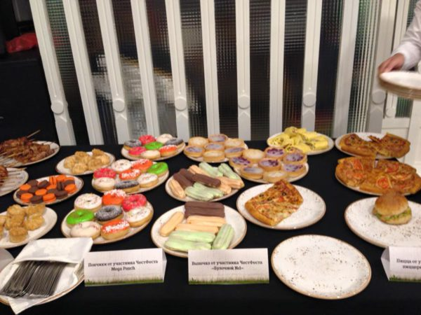

Начинающие маркетологи часто обращаются ко мне за советом: как правильно построить работу с журналистами.

И не нужно иронизировать по поводу еды и журналистов. Вы ведь, когда гостей зовёте, чаю им предлагаете? Так и тут.
Правда у журналиста рабочий день ненормирован, и бутерброд с колбасой может и выглядит не так презентабельно, но гостю будет много приятней, чем кофе и конфета.
Не стесняйтесь кормить.